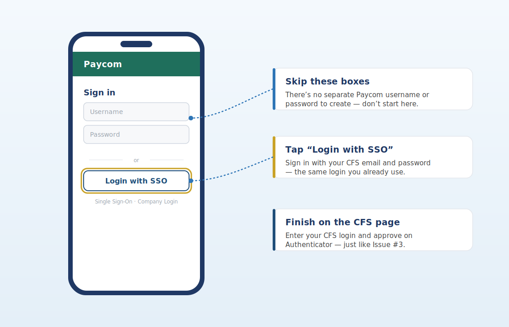

One quick tip. About a minute to read. Something you can use today.
This Week’s Tip
The easiest way into Paycom is “Login with SSO.” It uses the CFS email and password you already have — so there’s no separate Paycom password to remember.
Why it matters
Since the move from UKG to Paycom, the most common login snag is staff trying to create a separate Paycom username and password. You don’t need one. Paycom uses Single Sign-On (SSO), which means you sign in with your CFS email and password — the same credentials, and the same Authenticator approval on your phone. One less password to forget, and if your CFS login works, Paycom works.
How to sign in (the SSO way)
One login for everything
Because Paycom rides on your CFS account, there’s no second password to track or reset. It also means last week’s habit pays off twice: keep your CFS email login healthy by signing in weekly, and your Paycom access stays healthy right along with it.

Start with “Login with SSO” — your CFS login does the rest. Your screen may vary slightly by phone and app version.
Try an AI prompt this week
Open Copilot Chat in Outlook or Teams.
Past issues live on the CFS intranet — IT Help & Resources.
Have a topic idea or question? Email HelpDesk@cfsny.org.
— Jim Noriega and the CFS IT Team